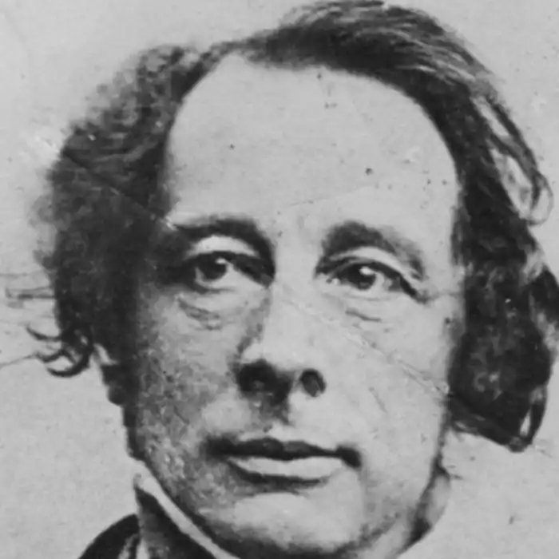
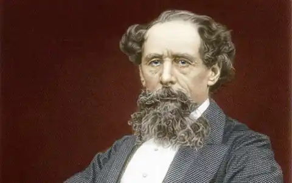
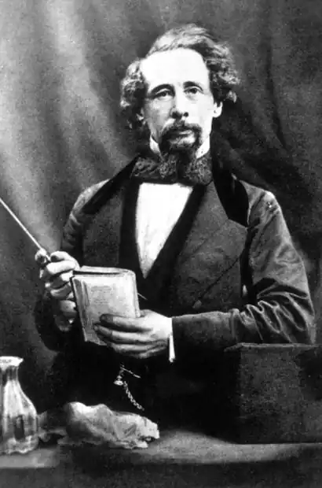

ЧАРЛЗ ДІККЕНС
(1812-1870)
Чарлз Діккенс — письменник вікторіанської епохи, який не тільки відобразив її у своїх творах і порушив проблеми, котрі хвилювали англійське суспільство, а й намагався їх розв'язувати. Його активна літературна й громадська діяльність сприяла великим змінам — ліквідації боргових тюрем, реформ у галузі освіти і судочинства, збільшенню кількості доброчинних організацій і відродженню меценацтва. Його любов до бідних і скривджених була справжньою, а не фальшивою, для нього вони були такими ж повноправними членами суспільства, як і заможні, їм він дарував усю силу свого таланту, усю свою любов, відкривши їм поезію їхнього буденного життя, і став символом Англії прозаїчної. Народився Чарлз Діккенс 7 лютого 1812 року в сім'ї дрібного чиновника морського казначейства Джона Діккенса. Спочатку батьки Чарлза жили порівняно благополучно, проте через деякий час почали з'являтися проблеми. Причиною негараздів було те, що батько письменника занадто легковажно ставився до сімейного добробуту, дуже захоплювався театром і вином, часто позичав гроші, не маючи змоги найближчим часом їх повернути. Крім того, він нехтував вихованням сина, який це назавжди запам'ятав. Бракувало Чарлзові також материнської ласки та уваги. Мати просто не мала для нього часу, бо намагалася дати раду усім своїм дітям (а їх було восьмеро). Отже, книжки й саме життя були найголовнішими його вихователями, початкову освіту Чарлз здобув у Чатемській школі, де тоді вчителював випускник Оксфорда Вільям Джілс; він і прищепив хлопчикові любов до англійської літератури й до читання взагалі. Ідилія юних літ тривала недовго: батько геть заплутався у боргах, і сім'я подалася до Лондона. Ситуація погіршувалася. Коли батько Чарлза потрапив-таки у боргову тюрму Маршалсі, сім'я перебралася до нього (за англійськими законами це дозволялося). Щоб якось зарадити лихові, Чарлза влаштовують на фабрику. Шість місяців, проведених у брудному старому приміщенні, були для вразливого хлопчика чи не найстрашнішими: одноманітна праця тривала з ранку до вечора. Це була й моральна травма для Чарлза, котрий прагнув учитися. У цей час у хлопця з'явилося ще одне захоплення — Лондон. Діккенс міг годинами блукати вулицями. Саме тут, у лондонських нетрях він, навіть цього не підозрюючи, дістав своє-справжнє виховання. Так маленький Чарлз створив у своїй уяві майбутній діккенсівський Лондон. Він проклав шляхи своїм героям: у якому завулку цього міста вони б не ховалися, він побував там раніше. Материного спадку, що дістався Джону та Вільяму Діккенсам, вистачило на те, аби розплатитися з кредиторами й забезпечити сім'ї більш-менш пристойне життя. Чарлз із неабиякою радістю залишив фабрику й продовжив навчання у приватній школі, після закінчення якої почав працювати молодшим клерком у адвоката Блекмора. Але, маючи жвавий характер, він відвідує спектаклі і, мріючи про театральне майбутнє, бере уроки сценічної майстерності. Крім того, Чарлза приваблювала робота репортера. Тому він наполегливо вчиться стенографії ночами, а вдень вивчає закони. З 1832 року Чарлз працював у місцевій газетці, потім був співробітником часопису "Дзеркало парламенту", що належав його родичеві. Діккенс дуже швидко зумів виділитися з-поміж інших працівників редакції: його репортажі були цікаві та набагато точніші, ніж звіти колег, хоч усім журналістам заборонялося робити записи. Розгадка проста й оригінальна: Чарлз одягав довгі та тверді манжети, а потім списував їх дрібним письмом. До професійних клопотів додалися й особисті — сім'я потребувала грошей, а батько знову заліз у борги. Це й вирішило подальші кроки — Діккенс узявся за перо. Особливих зусиль нова робота не потребувала: стільки було передумано, пережито, побачено, що варто лише взятися за папір, а далі — то справа репортерського досвіду й часу. Наприкінці 1833 року в журналі "Манслі Мегезін" з'явилося оповідання "Обід на Поплар Вок", правда, без імені автора. Читачі почали з нетерпінням чекати оповідань автора, який вирішив приховати своє ім'я під псевдонімом "Боз" (жартівливе прізвисько молодшого брата Чарлза Діккенса, яке згодом стало відоме сотням тисяч читачів). Так письменника продовжували називати, коли він став знаменитим. Нариси, автором яких був Боз, побачили світу різних часописах, часом і всупереч бажанням Діккенса, про що свідчать листи до друзів. До жанру нарису письменник звернувся не випадково: ще в дитинстві, заради розваги, він полюбляв занотовувати дещо про людей, з якими звела його доля, про цікаві місця, де бував. З роками таких записів ставало дедалі більше — це був безцінний матеріал, що чекав свого часу. Переконавшись, що нариси мають успіх у читачів, Діккенс наважився видати їх окремою книжкою. Так, у 1836 р. з'явилися на прилавках "Нариси Боза" у двох томах. Критики здебільшого недооцінюють першу книжку Діккенса, пишуть про неї зверхньо і поблажливо: дехто вважав, що авторові притаманне багатослів'я, зумовлене невпевненістю і тривогою, а також бажанням сподобатись читачеві. Так, у нарисах можна відшукати багато незакінченого й недосконалого, проте це пояснюється відсутністю літературного досвіду, але аж ніяк не таланту. А учнівство — це період, через який проходить ледь не кожен письменник, проте для одного він короткий, а інший до кінця життя залишається учнем. Зі сторінок циклу "Картинки з натури" перед читачем постає бурхливе життя столиці, яке змальовано яскраво й колоритно. Діккенс є справжнім майстром міського пейзажу. Лондон для нього не тільки населений пункт, а й частина його життя. Описи Діккенса — це, по суті, імпресіоністичні замальовки, де велику роль відіграють зорові, слухові й навіть смакові враження ("Вулиці. Вечір"). Діккенс звертає увагу на найболючіші проблеми сучасності: жалюгідне існування низів призводить до деградації особистості, яка починає шукати розради у вині (нарис "Будинки для життя"). Тему самотності людини в буржуазному світі порушено в нарисі "Думки про людей". У нарисі "Різдвяний обід" Діккенс вперше звернувся до теми Різдвяного свята як символу сімейної злагоди й затишку. Симпатії автора належать простому людові, який йому близький і зрозумілий, тоді як представник "середнього класу" — буржуа — стає мішенню для сатиричних стріл. Снобізм і пихатість, скупість і обмеженість — ось основні риси розбагатілих людців, які були б смішними, коли б не становили загрозу нормальній рівновазі суспільства. Перед читачем проходить галерея максимально конкретизованих та індивідуалізованих персонажів (нариси "Гораціо Спаркінс", "Екскурсія на пароплаві" та інші). Значення творів, що увійшли до циклу "Оповідання", не слід недооцінювати, майбутній досвід Ч. Діккенс використав у подальших творах. "Посмертні записки Піквікського клубу" — твір, що зробив відомим Діккенса, але сучасному читачеві він видається незрозумілим. Справа у добі письменника, літературній ситуації. Тогочасне життя породило літературу, можливо, у багатьох випадках примітивну, але не позбавлену того, за що згодом англійці так шануватимуть Діккенса і, здорового оптимізму, щирості й веселості. Після виходу в світ "Нарисів Боза" до Чарлза Діккенса завітав один із компаньйонів фірми Чепмен і запропонував участь у виданні, яке б частково нагадувало сучасні комікси. Це мала бути весела розповідь про спортивний клуб. Величезний успіх записок змусив автора повірити у власні сили й він, не закінчивши цього твору, підписав договір на новий роман "Пригоди Олівера Твіста". Роман "Записки клубу" був закінчений у 1837р. Ім'я автора було відоме кожному англійцеві. Цей роман засвідчив зростання майстерності письменника, який зі своїми героями пройшов складний шлях: від умовного героя анекдоту до дивовижної людини, від письменника-гумориста до сміливого борця зі злом. Це не лише найоптимістичніший і найбезхмарніший твір Діккенса, він виявився прообразом усіх діккенсівських романів, їх сюжетної структури. 6 січня 1842 р. Діккенс разом із дружиною відплив до США. Намір побувати за океаном з'явився у письменника давно. Спочатку це було прагнення поїхати до Америки, аби самому переконатися в перевагах американської демократії, про яку американці галасували на весь світ. Також він хотів остаточно розв'язати питання авторського права, бо через його відсутність страждали англійські письменники й передусім він сам. Американські враження були матеріалом для роману Ч. Діккенса — "Життя і пригоди Мартіна Чезлвіта" (1844). Одночасно він працював над повістю "Різдвяна пісня в прозі", що започаткувала відомий цикл Різдвяних повістей та оповідань. Після розриву з видавництвом у 1844 р. він подорожує Італією, Францією, Швейцарією. Враження від мандрівки відтворені у циклі "Картини Італії". Початок 50-х років — новий етап у творчості Діккенса. У 1850 році він розпочав роботу над "Історією Англії для дітей", що мала стати захоплюючою і романтичною. У цей період Діккенс активно працює в різних жанрах, проте перевагу віддає роману та його жанровим формам: історичний роман ("Повість про два міста" 1859), соціальний роман ("Крихітка Доррін" 1855-1857), соціально-авантюрний ("Великі сподівання" 1861), детективи ("Таємниця Едвіна Друда" 1870), роман-утопія ("Тяжкі часи" 1854). Чарлз Діккенс не зміг закінчити свій останній роман "Таємниця Едвіна Друда". 8 червня 1870 року йому стало погано; Звістка про смерть улюбленого письменника буквально приголомшила Англію. Це була національна трагедія. Його поховано в куточку поетів у Вестмінстерському абатстві. "Пригоди Олівера Твіста" В центрі уваги роману — трагедія людей, що животіють у робітному домі, керівництво якого вважає їх порушниками закону про бідних, нікчемними ледарями, невдячними тварюками. У другому розділі роману постає колективний образ таких "малих порушників", які вовтузилися цілий день на підлозі, потерпаючи від недостачі харчів та одежі. Виразно змальовані образи наглядачів. Це місіс Менн, яка, "виховуючи" дітей не лише голодом, а й різками та власним кулаком, при сторонніх лицемірно маскується мало не під рідну матір своїх підопічних. Зате її колега місіс Корні відверто кляне "старих відьом, які навіть померти не можуть, не дошкуливши чесним людям", і взагалі засуджує бідняків, незадоволених своєю долею.